# 随机场的空间相关
# 基本概念
# 随机变量和随机向量
离散随机变量（骰子，足球比赛的胜负）
连续随机变量（等电话，公交车的时间）
随机向量（多个随机变量的组合）
变量与随机变量的差别：随机变量的每一个取值都是有概率的。
# 分布函数和分布密度函数
分布函数（离散）
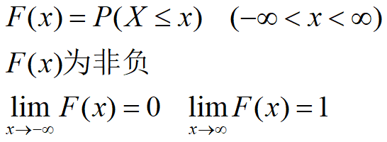密度函数：单位概率（连续）
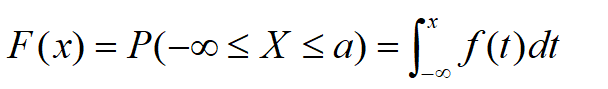密度函数：可以大于1，积分不能大于1。
注意：不是概率密度函数
# 数学期望和方差
数学期望：随机变量取值平均的大小
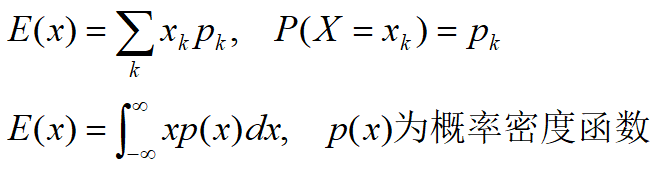数学期望和平均值区别：
平均值只是数学期望特殊情况，及每一个值出现的概率是相同的。
方差：反映随机变量取值的变化
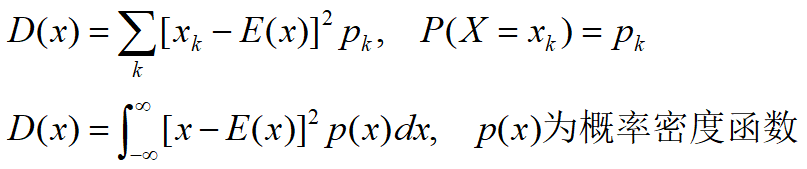数学期望又称为一阶原点矩，方差又称为二阶中心矩。
记忆：平方的期望减去期望的平方
# 随机函数
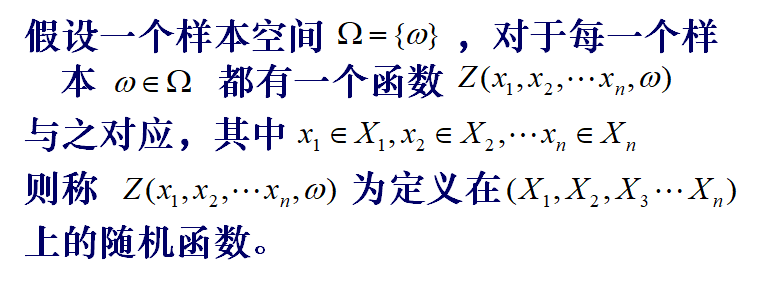股票例子：假设每只股票每天都有一个值，那么一年就会形成一只股票曲线，所有的股票曲线组成随机函数。某一天的股票值为随机变量。
随机函数每一值就是随机变量。
# 随机过程和随机场
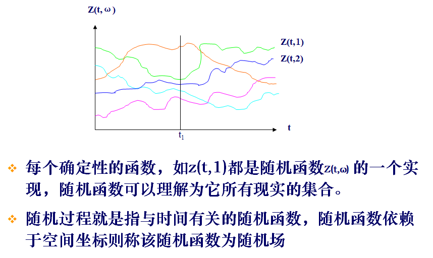# 概念之间的关系
# 协方差
协方差是指两个随机变量X，Y的二阶混合中心矩。
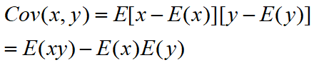简单记忆：积的期望减去期望的积
在随机过程中，是指随机过程z(t)在t1和t2时刻两个随机变量的z(t1)和z(t2)的二阶混合中心矩。
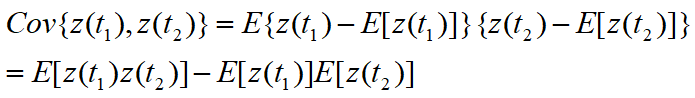t1和t2有关系，例如先后顺序关系。
z(t1)和z(t2)也有关系，例如空间上关系
# 变量的变换
# 均值计量变换
其数学意义是将坐标轴拉神
# 极差变换
Z_i∈[0,1]其几何意义是将坐标原点移到最小值的位置。
# 标准化变换
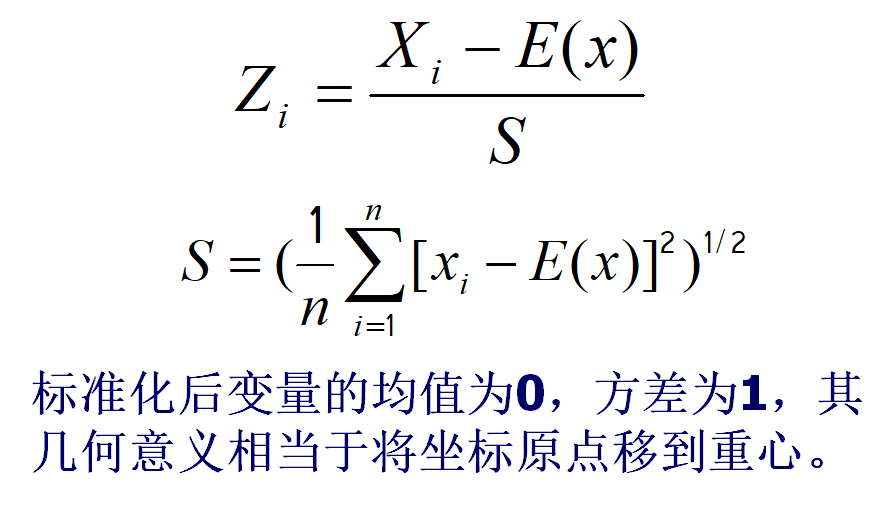# 对数变换
# 指数变换
# 幂函数变换
# 变换的含义
- 对数变换的小值放大和小值缩小效应
- 指数变换的小值缩小和大值放大效应
# 相关及空间相关性
# 相关性
- 正相关：一个变量变大或者变小，另一个随之变大或或者变小
- 养分与产量
- 岩石中金与银的含量
- 负相关：一个变量变大或者变小，另一个变小或者变大
- 收藏品的数量与价值
相关性衡量
相关系数
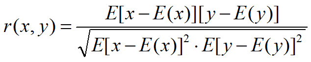r(x,y)∈(-1,1)。越大正值显著正相关，越大负值显著负相关，零值无相关。
不能仅仅通过协方差来判断，因为对x和y的值比较敏感，一般使用以下的相关系数。
经过标准化变换之后，变量之间的相关系数公式可以简化：
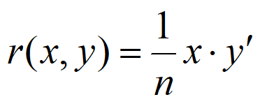n为变量的维数
# 空间自相关
地理学第一定律：“Everything is related to everything else, but near things are more related to each other“
任何事物都相关，只是相近的事物关联更紧密
番外：
地理信息科学（GIS）当成地理学的数学表达，定量表达。
随机函数的空间自相关
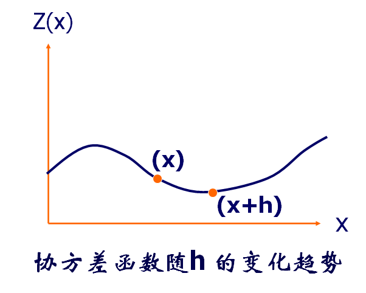大多数地理现象（人口分布）可以用随机函数来表达。在用随机函数表达之后，两个事务(x和x+h)之间可以用两个随机变量表达（以距离衡量）。
两个随机变量来自于同一个随机函数——>自相关。
协方差函数指随机场Z(x)中，空间两点x和x+h处两个随机变量z(x)和z(x+h)的二阶混合中心矩，称为自协方差函数或简称协方差函数。
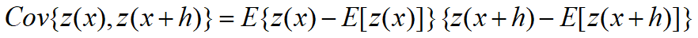 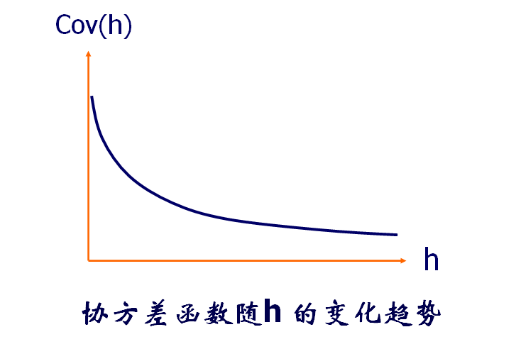大多数地理现象满足随着h的增大，协方差越小。
从定义出发理解，距离越小，两个同号可能性越大，值越大。距离越远，两个异号可能性越大，值越小。
# 空间互相关
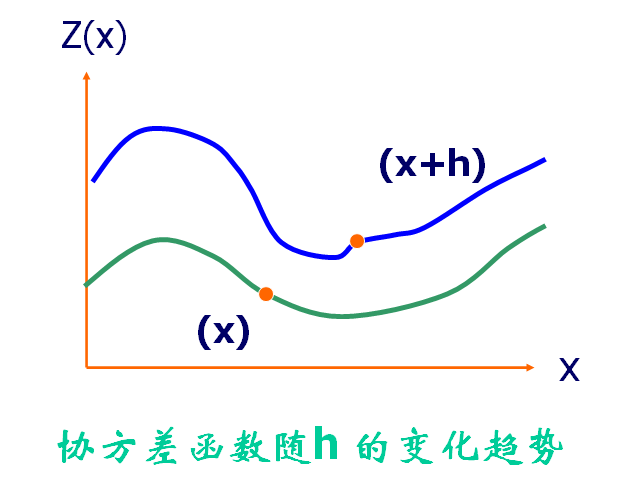在两个随机函数上各取两个随机变量(x和x+h)
互协方差函数指两个区域化变量Z1(x)和Z2(x)，空间两点x和x+h处两个随机变量z1(x)和z2(x+h)的二阶混合中心矩，称为互协方差函数。

两个变量来自于不同的随机函数——> 互相关。
举例：高程和温度。分析高程和温度两个随机函数在空间上之间的关系。
协方差，协方差函数，互协方差函数
协方差：正规定义
个人的身高和体重
协方差函数：考虑距离下的同一随机函数的协方差函数
日常的股票，降水，气温
互协方差函数：考虑距离下的不同随机函数的协方差函数
地理学中的高程和气温
# 二阶平稳假设
# 引子
地理学中的某个问题，需要利用平稳性假设来解决。
某些地理现象（例如土壤取样）取样一次后就消失了，导致随机性丢失。
# 平稳假设
指区域化变量Z(x)的任意n维分布函数不因空间点x发生位移而改变。
理解：x无论在任何地方，Z(x)的概率密度函数都是一致。
证明：
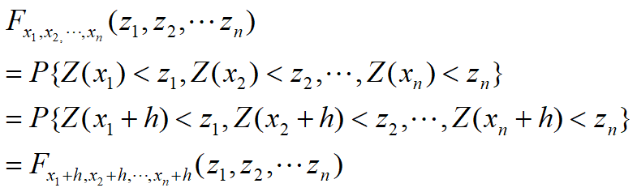平稳假设：这就要求随机函数Z(x)的各阶矩都存在（概率分布模式相同），且平稳。
在实际中通常采用二阶平稳假设，即要求区域化变量的一、二阶矩存在并平稳。
平稳的含义：与具体位置无关
例如质量是与位置无关，无论在地球和月球中都是质量一致的，其是平稳的。
重量是不平稳的，在不同位置其重量不一致，不是平稳的 。
# 二阶平稳假设
- 数学期望存在且平稳。
两个随机函数值不一样，但是数学期望一样。
例子股票，股票的早上10点和下午3点的股票值不一样，但是分布或者期望一样。
海平面不断变化，同一刻两个位置可能变化不一样，考虑长时间的综合分布，其两个值是分布或者期望可以一样。
- 协方差函数存在且平稳
Cov(h)表明地理事物之和距离h有关系、和位置x无关系。
协方差函数存在且平稳，那么方差也存在且平稳。
证明理解：在空间中，h=0时，协方差和方差相同的
问到引子中问题：若考虑二阶平稳假设，地理事物之间相关之和h有关系，那么在地理事物采样过程中，就可以考虑间隔h下，连续采样，再进行空间相关性分析。（例如间隔h对土壤采样）
平稳随机场示例：
平稳的随机场：海水面
不平稳的随机场：DEM
局部平稳性假设：在局部范围内平稳
意义：合理利用样本研究随机场的性质
- 直方图统计
- 数学期望和方差的计算
- 协方差，变差函数的计算
- 插值